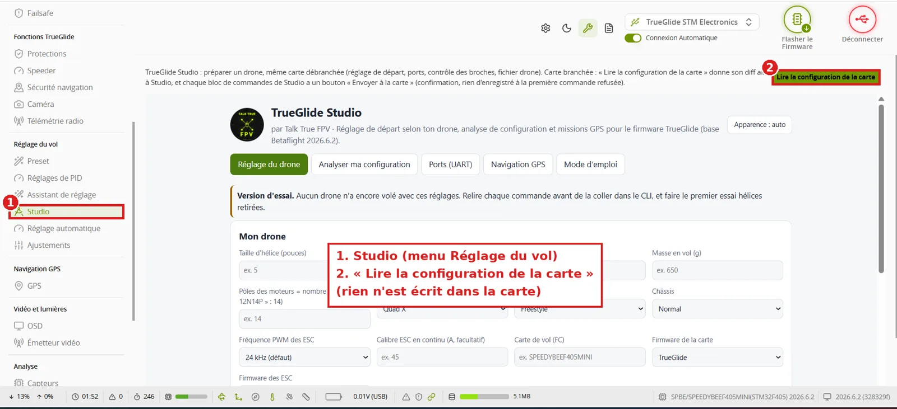

TRUE
TRUEStudio
TRUEGLIDE STUDIO (menu « Réglage du vol ») calcule un réglage complet à partir de la description de votre drone : taille d'hélice, KV des moteurs, batterie, masse, style de vol. Chaque valeur proposée est expliquée, puis envoyée à la carte avec une sauvegarde avant et une relecture après. Studio s'ouvre aussi seul, sans carte : /studio/.

Ce que fait Studio
- Lire la configuration de la carte : Studio reçoit le
diff allde la carte (ports, KV des moteurs s'il est réglé…). Rien n'est écrit dans la carte. - Il compare votre drone à des drones de référence de même taille d'hélice (préréglages Betaflight) et propose protocole moteur, boucle PID, filtres, PID et réglages TrueGlide (limite de courant à 80 % du calibre des ESC, protection anti-surchauffe…).
- Chaque réglage a sa raison (taille, puissance, ESC, références utilisées), affichée sous le résultat.
- Les commandes vont dans le profil PID et le profil de rates actifs de la carte.
Régler un drone
- Gardez une copie de votre configuration : onglet CLI,
diff all, « Enregistrer sous ». - Carte branchée en USB, batterie débranchée (sinon la carte peut changer seule de profil selon le nombre de cellules) : ouvrez Studio, puis Lire la configuration de la carte.
- Dans Mon drone : taille d'hélice, KV, batterie (cellules), masse en vol (batterie comprise, pesée de préférence), pôles des moteurs, style de vol, châssis, ESC. Puis Calculer le réglage. Un champ obligatoire vide : Studio dit ce qui manque.
- Lisez le réglage proposé, les commandes, puis le détail des réglages.
Pourquoi le pas de l'hélice n'est pas demandé
Studio ne cherche pas la poussée réelle : il compare votre drone à des drones de référence de même taille d'hélice, avec un coefficient d'hélice fixe pour les deux (pas « moyen »). C'est la ligne « Puissance / référence (estim.) ». Avec le fichier du calculateur TALKTRUE FPV XRIG et « Base du réglage : Données du calculateur », le rapport poussée / poids et les gaz de stationnaire viennent de votre hélice réelle (poussée mesurée au banc) ; la correction des PID reste sur l'estimation.
Envoyer à la carte
- Hélices retirées. Envoyer à la carte : le logiciel télécharge d'abord une sauvegarde de la carte.
- Si un réglage touche les moteurs, le failsafe, l'armement, ou si un PID change fortement, une question « ATTENTION » montre chaque valeur avant et après.
- La carte enregistre puis redémarre ; à la première commande refusée, rien n'est enregistré. Le logiciel relit ensuite la carte (« Carte relue après l'enregistrement »).
- Contrôle : onglet CLI,
diff all.
Studio peut aussi préparer un réglage sur une carte hors ligne, envoyé plus tard à la vraie carte.
Revenir comme avant
Collez votre diff all de départ dans l'onglet CLI (il commence par defaults nosave et remet toute la configuration enregistrée), puis save. Si vous utilisez la carte hors ligne, refaites ensuite une récolte.
En cas de problème
| Ce que vous voyez | Ce que vous faites |
|---|---|
| « À remplir avant de calculer : … » | Remplissez les champs cités dans « Mon drone », puis « Calculer le réglage ». |
| Rien ne s'affiche après « Calculer » | Le résultat s'affiche sous « Fichier drone » ; sinon, descendez dans le cadre de Studio (il a sa propre barre de défilement). |
| La carte ne revient pas après l'envoi | Débranchez puis rebranchez l'USB, Connexion. |
Mode d'emploi en images
Mode d'emploi TRUEGLIDE STUDIO (PDF) : 21 étapes en images, avec la carte hors ligne.